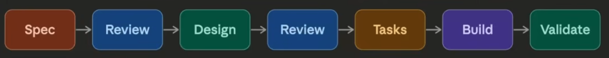

A development approach where a detailed specification document is written before any code is written. The spec acts as the single source of truth for what the system should do — and all development flows from it.
Back in Video 1, we said Claude Code is a brilliant junior developer that needs clear instructions. The spec is exactly that instruction set — agreed before either of you starts writing code.
Vibe coding vs spec-driven development
Same tool. Completely different discipline.
Vibe coding
Spec-driven development
Starting point
A feeling / rough idea
A written specification
Who decides requirements
AI infers them
You define them upfront
Control
Low — AI leads
High — you lead
Speed to first result
Very fast
Slower upfront, faster overall
Code quality
Unpredictable
Consistent and traceable
Works well for
Prototypes, exploration, side projects
Production systems, teams, complex apps
Failure mode
Spaghetti code you don't fully understand
Over-specified, rigid if requirements change
Debugging approach
Ask AI to fix it
Check against spec to find drift
Need to understand the code?
Not really
Yes — you own the spec
What goes into a spec
01
Problem statement
What's broken or missing, stated in plain terms.
02
Functional requirements
What the system has to do, behaviour by behaviour.
03
API contracts
Inputs, outputs, and the data shapes each call commits to.
04
Constraints
Technical, UX, or business limits the solution has to respect.
05
Edge cases & error handling
What happens on bad input, empty state, and outright failure.
06
Acceptance criteria
How you'll know it's done — testable, not just "it works."
The spec-driven flow
Two review gates — one before design, one after.

Review 1Catches a wrong spec before you design against it.
Review 2Catches a wrong design before it turns into tasks and code.
ValidateChecks what was built against the spec — not against your memory of it.
The full loop — 16 steps, 5 phases
One feature, start to finish. We'll build login and logout for TaskFlow.
1–4
Set up
New session, named. Pull main, branch off it.
5–7
Spec
Write it, review it, save it in the repo.
8
Plan
Plan Mode reads the spec and the code, and writes a plan.
9–11
Build
Implement, validate against the spec, iterate.
12–16
Ship
Commit, push, merge the PR, clean up the branch.
↻
Repeat
Same loop, every feature. That's the whole discipline.
Steps 1–7 — set up, then spec
Nothing is written until the spec is reviewed and saved.
01
Start a new Claude session — a clean context window for one feature
02
Rename the session to login and logout
03
Pull the most recent code — git pull origin main
04
Create and switch to a branch — git checkout -b feature/login-logout
Review the spec yourself. This is review gate one — a wrong spec here becomes wrong code everywhere
07
Save it as .claude/specs/01-login-logout.md
Step 8 — plan from the spec
Plan Mode is read-only. It designs; it does not touch your code.
Shift+Tab twice — plan mode on
>Read .claude/specs/01-login-logout.md and the existingapp/src/app.ts and app/src/db/schema.ts, then generatean implementation plan.Save this plan to .claude/plans/01-login-logout.md
Read the plan before approving it — review gate two. Point it at the real files, not just the spec, so the plan fits the codebase you actually have.
Steps 9–11 — build, validate, iterate
09
Implement the plan — review every edit manually as it lands, one change at a time
10
Validate against the spec document — walk the acceptance criteria one by one, not your memory of what you asked for
11
Iterate if required — if the build drifted, the spec is the reference that tells you where
If the spec turns out to be wrong rather than the code, fix the spec first — then come back and re-validate against it.
Steps 12–16 — ship it
feature/login-logout → main
12git add .git commit -m 'login and logout'13git push origin feature/login-logout14Create and merge the PR15git checkout main16git branch -D feature/login-logout
The spec stays in the repo after the branch is gone — that's the record of what "done" meant for this feature.
Key takeaways
✓
A spec is a written document that becomes the single source of truth — every later decision flows from it.
✓
Cover the problem, functional requirements, API contracts, constraints, edge cases, and acceptance criteria.
✓
Vibe coding is fast to a first result; spec-driven is slower upfront and faster overall.
✓
Review twice — after the spec and after the design — then validate the build back against the spec.
✓
Keep it in the repo, referenced by path, versioned with the code it describes.